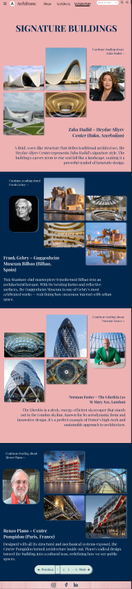
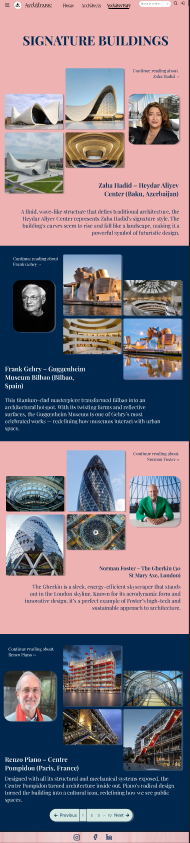

This page is about everything we’ve learnt in the topic ‘Web Design’ which was taught in the second term. The learning included designing websites through the use of wireframes, Figma mockups, and experimenting with different layouts. According to the internet, web design is the process of planning and arranging content online with a focus on aesthetics and usability. We also explored how to apply color schemes, typography, and consistent design elements to make our projects look professional and visually appealing.
The Web Design assessment required us to choose a blog topic and research it before starting the design process. We first created multiple wireframes in Figma to explore different layout ideas. After receiving feedback, we refined our designs and decided on one mockup to develop further. We then created a detailed website mockup, applying design principles such as color schemes, typography, and layout balance. I also tried to incorporate some of Nielsen’s usability heuristics into my design so the final mockup was both visually appealing and easy to use.
These three images represent the main ideas we explored in Web Design. The first shows the five visual-design principles in UX — contrast, repetition, alignment, proximity, and balance — which guide how layouts are structured. The second highlights wireframing conventions, where websites are sketched as simple blueprints to plan placement of content and test usability before adding full design details. The third image is the colour wheel, which helps designers choose effective and professional colour schemes by showing how different colours work together to create harmony, contrast, and mood.

These wireframes were carefully designed in Figma to plan the layout and structure of the website before development. Each wireframe represents a different page or section, showing the placement of key elements such as headers, navigation, content areas, and buttons. The focus during this stage was on usability and clarity, ensuring that the user experience is intuitive and visually balanced. By creating these wireframes, I was able to experiment with spacing, hierarchy, and alignment, which helped streamline the design process and guide the development of a cohesive, user-friendly website.
The mood board for this project went through several iterations, exploring different color schemes, textures, and visual styles. After experimenting with four variations, I ultimately chose the version displayed on the left, as it best captured the aesthetic and tone I wanted for the website. Mood boards are an essential part of the design process because they help define the visual language, guide creative decisions, and ensure consistency across all elements. By curating colors, typography, and imagery, a mood board acts as a reference point that communicates the intended feeling and style before moving into detailed design and development.
 
